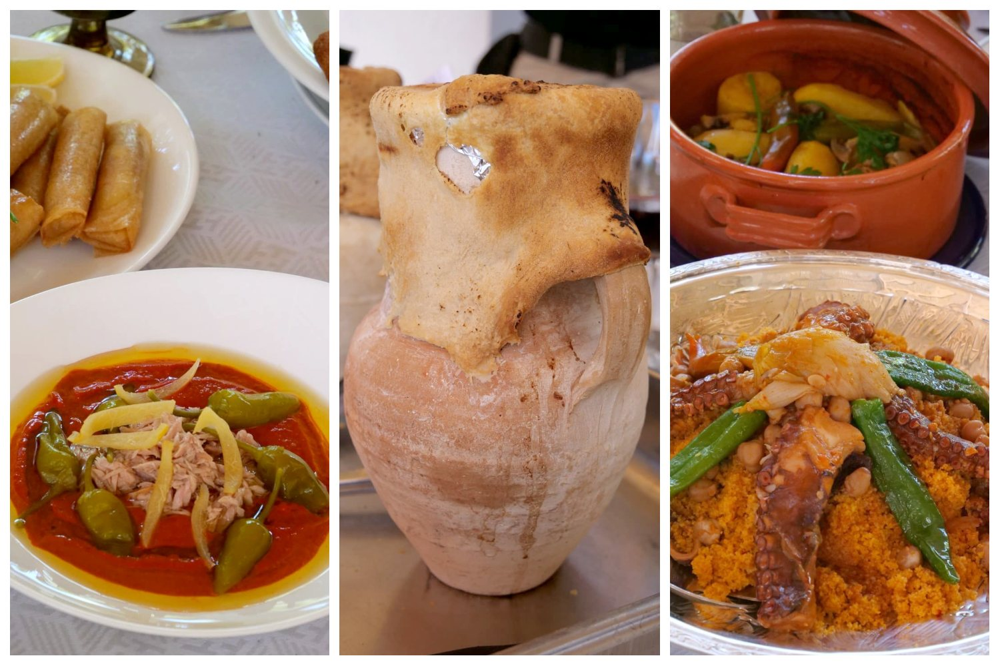
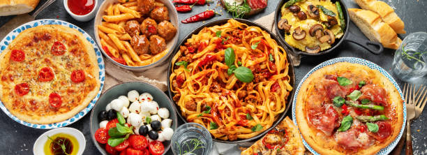
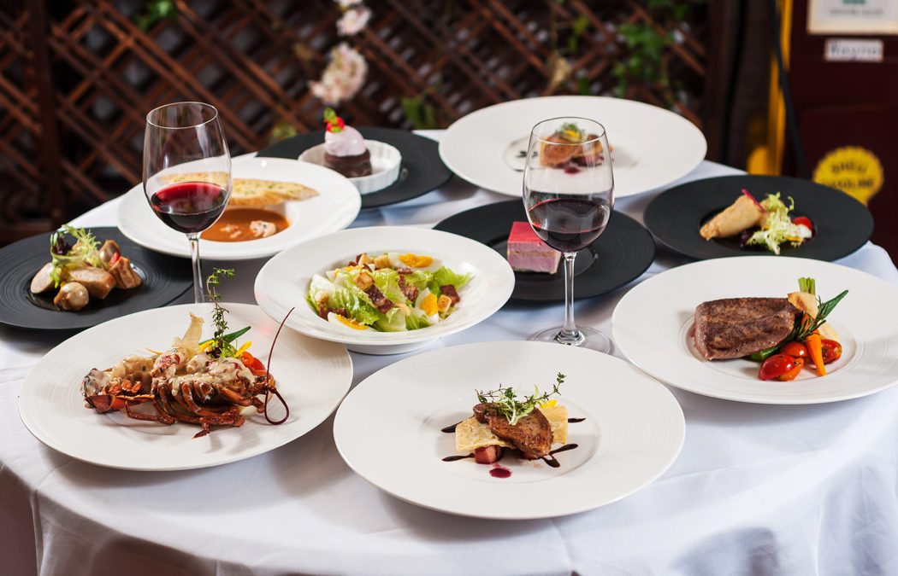
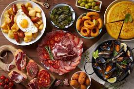

la cuisine méditerranéenne
La cuisine méditerranéenne tunisienne est caractérisée par une riche variété de saveurs, d'ingrédients frais et d'influences culinaires diverses. Elle est profondément ancrée dans la culture et l'histoire de la Tunisie, reflétant les influences berbères, arabes, ottomanes, françaises, et d'autres cultures méditerranéennes

la cuisine italienne
La cuisine italienne est largement reconnue comme l'une des cuisines les plus délicieuses et influentes du monde. Elle est appréciée pour sa simplicité, sa fraîcheur, la qualité de ses ingrédients et son héritage culturel riche.

la cuisine Française
La cuisine française est mondialement célèbre pour son raffinement, sa diversité et son héritage gastronomique. Elle est souvent considérée comme l'une des grandes cuisines du monde en raison de son influence historique et de sa contribution à la gastronomie internationale
la cuisine Americaine
La cuisine américaine est caractérisée par sa diversité, son mélange d'influences culturelles et ses portions généreuses. En raison de la taille et de la diversité géographique des États-Unis, la cuisine américaine varie considérablement d'une région à l'autre, incorporant des éléments des traditions culinaires autochtones, européennes, africaines, asiatiques et latino-américaines

la cuisine Espagnole
La cuisine espagnole est réputée pour sa diversité régionale, ses saveurs intenses et sa créativité culinaire. Chaque région d'Espagne a ses propres spécialités, utilisant des ingrédients locaux de haute qualité.